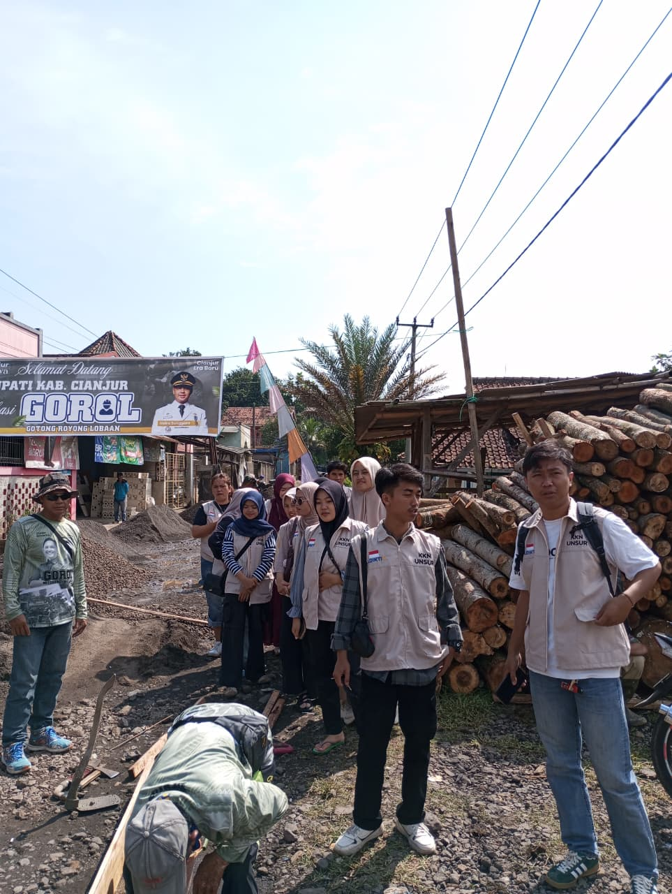

PROGRAM GOROL (GOTONG ROYONG LOBAAN) DI DESA SUKAMAJU
Sukamaju - Semangat kebersamaan dan gotong royong kembali digaungkan di Kabupaten Cianjur melalui program unggulan Bupati Cianjur, yaitu GOROL (Gotong Royong Lobaan). Kali ini, warga Desa Sukamaju, Kecamatan Cibeber, menjadi saksi nyata implementasi program tersebut dengan turun langsung memperbaiki infrastruktur jalan desa.
Dalam kegiatan yang berlangsung penuh antusiasme ini, terlihat warga bahu-membahu dengan para mahasiswa Kuliah Kerja Nyata (KKN) dari Universitas Suryakancana (Unsur) yang tengah mengabdi di desa tersebut. Kehadiran spanduk bertuliskan "Selamat Datang Bupati Kab. Cianjur" dan logo GOROL menjadi penanda bahwa kegiatan ini merupakan bagian dari gerakan masif yang diinisiasi oleh Pemerintah Kabupaten Cianjur.
Program GOROL sendiri bertujuan untuk mempercepat pembangunan infrastruktur di tingkat desa dengan melibatkan partisipasi aktif masyarakat. Melalui skema gotong royong, pemerintah daerah mendorong warga untuk memiliki rasa tanggung jawab dan kepedulian terhadap fasilitas umum di lingkungan mereka.
Kepala Desa Sukamaju menyatakan apresiasinya terhadap program ini. Menurutnya, GOROL tidak hanya membantu memperbaiki jalan yang menjadi akses vital bagi aktivitas warga sehari-hari, tetapi juga berhasil mempererat tali silaturahmi dan kekompakan antarwarga serta mahasiswa.
"Alhamdulillah, dengan adanya program GOROL dari Bapak Bupati, perbaikan jalan di desa kami bisa terlaksana. Ini adalah bukti nyata bahwa ketika pemerintah dan masyarakat bergerak bersama, pekerjaan seberat apapun akan terasa ringan," ujarnya.
Sinergi antara pemerintah, masyarakat, dan akademisi seperti yang terlihat di Desa Sukamaju menjadi model ideal pembangunan partisipatif yang diharapkan dapat terus berlanjut dan menginspirasi desa-desa lainnya di seluruh Kabupaten Cianjur.